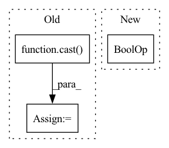

Pattern ID :25324
Before Change
// with all import styles in jupyter notebooks, using string
// comparison instead.
if "DiscreteOutput" in str(output.__class__):
output = cast( DiscreteOutput, output)
if variable_dim_index == 1:
indices = original_data[:, index].astype(int)
elif variable_dim_index == 2:
indices = original_data[:, :, index].astype(int)
else:
raise RuntimeError(
f"Unsupported variable_dim_index={variable_dim_index}"
)
if variable_dim_index == 1:
b = np.zeros((len(indices), output.dim))
b[np.arange(len(indices)), indices] = 1
elif variable_dim_index == 2:
b = np.zeros((indices.shape[0], indices.shape[1], output.dim))After Change
// NOTE: isinstance(output, DiscreteOutput) does not work consistently
// with all import styles in jupyter notebooks, using string
// comparison instead.
if "OneHotEncodedOutput" in str(
output.__class__
) or "BinaryEncodedOutput" in str(output.__class__) :
if variable_dim_index == 1:
original_column = original_data[:, index]In pattern: SUPERPATTERN
Frequency: 3
Non-data size: 3
Instances Fragment ID: 77516820
Project Name: gretelai/gretel-synthetics
Commit Name: cf7dd31ca60b565bb50fdf0b30092e2c9ebb25bf
Time: 2022-11-21
Author: kendrick@gretel.ai
File Name: src/gretel_synthetics/timeseries_dgan/transformations.py
M Class Name: AnonimousClass
N Class Name: AnonimousClass
M Method Name: transform(4)
N Method Name: transform(4)
M Parent Class:
N Parent Class:
M File Name: src/gretel_synthetics/timeseries_dgan/transformations.py
N File Name: src/gretel_synthetics/timeseries_dgan/transformations.py
M Start Line: 244
M End Line: 293
N Start Line: 588
N End Line: 623
Before Change
return None
for output in outputs:
if "DiscreteOutput" in str(output.__class__):
output = cast( DiscreteOutput, output)
if variable_dim_index == 1:
onehot = transformed_data[
:, transformed_index : (transformed_index + output.dim)After Change
if np.isnan(transformed_data).any():
return None
for output in outputs:
if "OneHotEncodedOutput" in str(
output.__class__
) or "BinaryEncodedOutput" in str(output.__class__) :
if variable_dim_index == 1:
v = transformed_data[ Fragment ID: 77516821
Project Name: gretelai/gretel-synthetics
Commit Name: cf7dd31ca60b565bb50fdf0b30092e2c9ebb25bf
Time: 2022-11-21
Author: kendrick@gretel.ai
File Name: src/gretel_synthetics/timeseries_dgan/transformations.py
M Class Name: AnonimousClass
N Class Name: AnonimousClass
M Method Name: inverse_transform(4)
N Method Name: inverse_transform(4)
M Parent Class:
N Parent Class:
M File Name: src/gretel_synthetics/timeseries_dgan/transformations.py
N File Name: src/gretel_synthetics/timeseries_dgan/transformations.py
M Start Line: 367
M End Line: 442
N Start Line: 699
N End Line: 764
Before Change
// We need to cast them to Any here so that numpy doesn"t complain
// about either an untyped function call or an unused ignore statement.
min_val = cast(Any, np.min)(arr).item()
max_val = cast( Any, np.max) (arr).item()
numpy_metadata: Dict[str, "MetadataType"] = {
"shape": tuple(arr.shape),After Change
base_metadata = super().extract_metadata(arr)
if np.issubdtype(arr.dtype, np.number):
return {**base_metadata, **self.extract_numeric_metadata(arr)}
elif np.issubdtype(arr.dtype, np.unicode_) or np.issubdtype(
arr.dtype, np.object_
) :
return {**base_metadata, **self.extract_text_metadata(arr)}
else:
return {**base_metadata} Fragment ID: 77516816
Project Name: maiot-io/zenml
Commit Name: 343bd21c1db69411eb4081c00db792a90f308c95
Time: 2023-03-09
Author: 34200873+safoinme@users.noreply.github.com
File Name: src/zenml/materializers/numpy_materializer.py
M Class Name: NumpyMaterializer
N Class Name: NumpyMaterializer
M Method Name: extract_metadata(2)
N Method Name: extract_metadata(2)
M Parent Class: BaseMaterializer
N Parent Class: BaseMaterializer
M File Name: src/zenml/materializers/numpy_materializer.py
N File Name: src/zenml/materializers/numpy_materializer.py
M Start Line: 137
M End Line: 148
N Start Line: 189
N End Line: 196